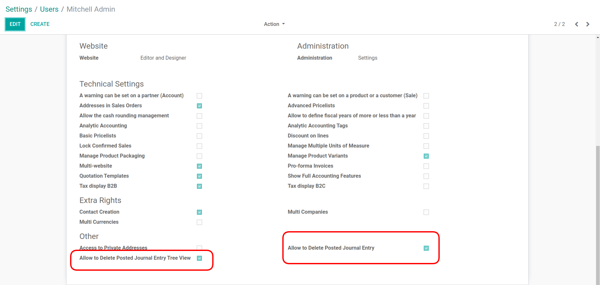
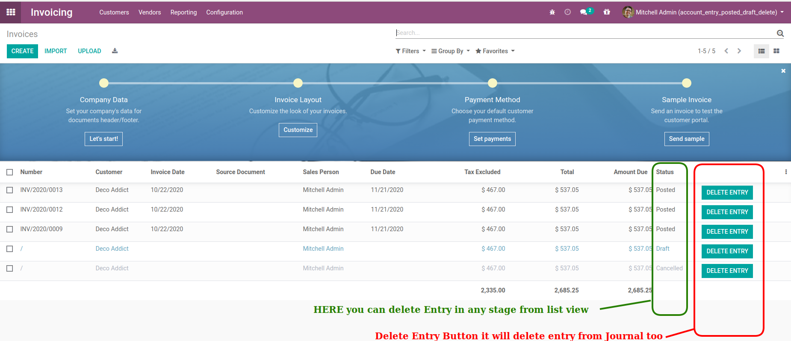
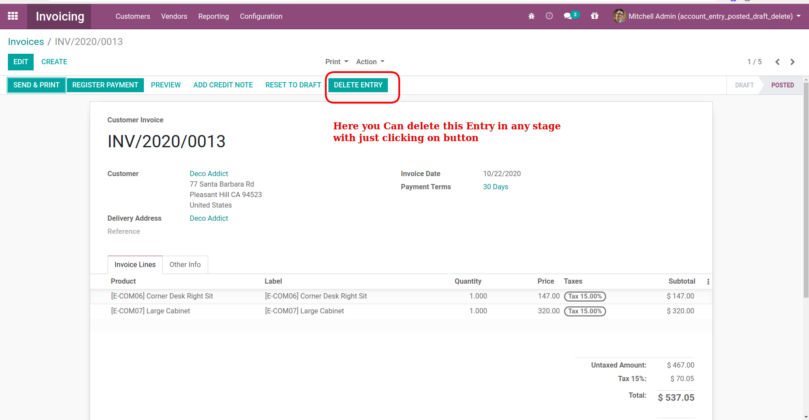

Delete Account Journal Posted Entry
POS Configuration for allowed Delete posted Entry in any state of the record and allowed delete entry from the list/tree view.

As per the screen you can delete entry in any stage of the record , with just clicking on the delete entry button.

Here you can delete entry form the form view in stage user wise .
